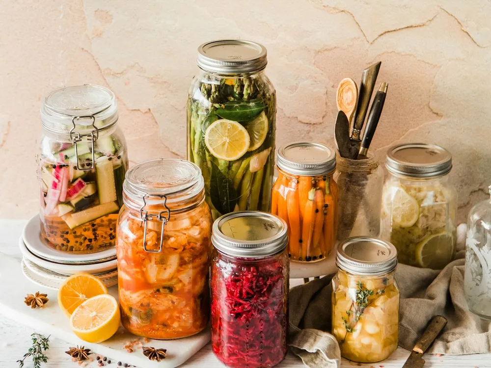
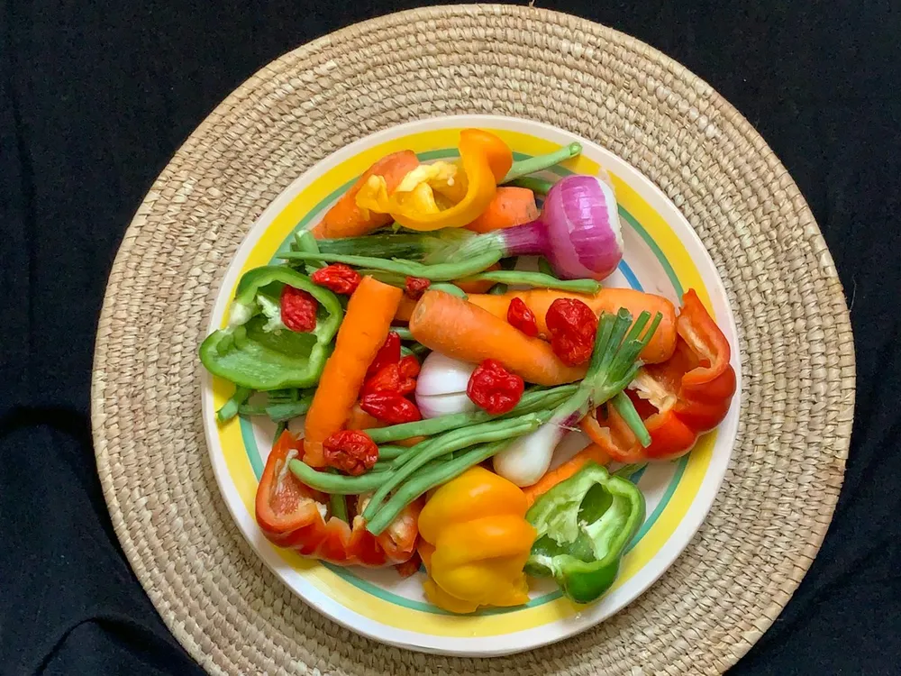

Microbiota y saciedad: cómo tus bacterias regulan el hambre
Solemos pensar que el hambre y la saciedad se deciden en el estómago o en la fuerza de voluntad. Pero en esa conversación participan también billones de bacterias que viven en tu intestino. Tu microbiota fermenta parte de lo que comes y produce sustancias que envían señales de saciedad al cerebro. En este artículo te explico cómo funciona, qué sabemos de verdad y qué puedes hacer en tu día a día para cuidarla, sin dietas ni suplementos milagro.
Qué es la microbiota intestinal
La microbiota intestinal es el conjunto de microorganismos, sobre todo bacterias, que viven en nuestro intestino, principalmente en el colon. No son invasores: conviven con nosotros y cumplen funciones importantes. Ayudan a digerir lo que nuestro cuerpo no puede, fabrican algunas vitaminas, entrenan al sistema inmunitario y protegen la pared intestinal.
Cada persona tiene una microbiota diferente, influida por cómo nació, la lactancia, los antibióticos, el estrés, el sueño y, sobre todo, la alimentación. Lo que comes cada día es su principal fuente de alimento.
Cómo habla tu intestino con tu cerebro
Cuando la fibra y otros hidratos de carbono que no digerimos llegan al colon, las bacterias los fermentan. De esa fermentación salen los ácidos grasos de cadena corta: acetato, propionato y butirato. Estas moléculas alimentan a las células del colon, pero además funcionan como mensajeras.
En el intestino hay células especializadas que detectan estos ácidos grasos y responden liberando hormonas de saciedad, como el GLP-1 y el péptido YY1. Estas hormonas viajan hasta el cerebro y le dicen que ya hay suficiente energía, ralentizan el vaciado del estómago y ayudan a regular el azúcar en sangre. Es una de las vías del llamado eje intestino-cerebro, una comunicación de ida y vuelta en la que también participan el sistema nervioso y el sistema inmunitario2.
Dato curioso: el GLP-1 es la misma hormona en la que se basan algunos medicamentos actuales para la diabetes y la obesidad. Tu cuerpo ya la fabrica, y lo que comes influye en cuánta produce.
Qué dice la evidencia en personas
Buena parte de lo que sabemos viene de estudios en laboratorio y en animales, así que conviene ser prudentes. Aun así, hay estudios en personas muy interesantes.
En un ensayo con adultos, los investigadores hicieron llegar propionato directamente al colon con un compuesto diseñado para ello. Al tomarlo, aumentaron las hormonas GLP-1 y péptido YY y las personas comieron menos en la siguiente comida sin proponérselo3. Es decir, potenciar lo que producen las bacterias tuvo un efecto real sobre el apetito.
Ahora bien, no toda la fibra funciona igual ni de forma inmediata. Una revisión de más de 40 estudios encontró que la mayoría de las fibras tomadas de forma puntual no reducían el apetito, aunque algunas sí mostraron efecto, como el betaglucano de la avena o el centeno integral4. El mensaje es que la saciedad no depende de un alimento concreto, sino de un patrón de alimentación mantenido en el tiempo.
Lo que comes cambia tu microbiota, y rápido

La buena noticia es que la microbiota responde enseguida a los cambios. En un estudio, cambiar de una dieta basada en vegetales a otra basada en productos animales modificó la composición de las bacterias intestinales en pocos días5.
Los alimentos fermentados también tienen su papel. En un ensayo de 10 semanas, las personas que aumentaron su consumo de yogur, kéfir, chucrut, kimchi y otros fermentados ganaron diversidad en su microbiota y redujeron varios marcadores de inflamación6. Curiosamente, en ese mismo estudio aumentar mucho la fibra en poco tiempo no aumentó la diversidad, lo que sugiere que cada microbiota necesita su tiempo para adaptarse.
Ultraprocesados y saciedad
Los productos ultraprocesados suelen tener poca fibra, mucha energía en poco volumen y texturas que se comen muy rápido. En un estudio en el que los participantes podían comer lo que quisieran, con una dieta de ultraprocesados comieron unas 500 kilocalorías más al día que con una dieta de alimentos poco procesados, y además comían más deprisa7.
No se trata de prohibir nada ni de sentirse culpable por comer un producto procesado. Se trata de entender que, cuando la base de tu alimentación son alimentos frescos y con fibra, tu cuerpo y tus bacterias tienen más herramientas para decirte cuándo has comido suficiente.
Cómo cuidar tu microbiota desde el plato

Estas son las pautas que más recomiendo en consulta:
- Más fibra, y variada. Una gran revisión de estudios relacionó tomar al menos 25 a 29 gramos de fibra al día con menos riesgo de varias enfermedades crónicas8. La mayoría de las personas toma bastante menos. Cada tipo de fibra alimenta a bacterias distintas, así que cuanta más variedad, mejor.
- Legumbres varias veces por semana. Lentejas, garbanzos, alubias o guisantes son de los alimentos más completos para tu microbiota.
- Cereales integrales y avena. El pan integral de verdad, el arroz integral o unos copos de avena en el desayuno suman fibra fermentable.
- Fruta y verdura de colores. Además de fibra, aportan polifenoles que también sirven de alimento a las bacterias.
- Frutos secos y semillas, un puñado al día.
- Fermentados si te gustan y te sientan bien: yogur natural, kéfir, chucrut o encurtidos fermentados.
- Sube la fibra poco a poco y bebe suficiente agua. Si haces un cambio brusco, es normal tener más gases los primeros días.
Para que veas que no hace falta complicarse, así podría ser un día cualquiera pensando en tu microbiota:
| Momento | Idea |
|---|---|
| Desayuno | Yogur natural o kéfir con copos de avena, una pieza de fruta y unas nueces. |
| Comida | Garbanzos guisados con espinacas y pimiento, pan integral y una mandarina. |
| Merienda | Tostada de pan integral con tomate y aceite de oliva virgen extra. |
| Cena | Crema de calabaza, tortilla con champiñones y una ensalada con semillas. |
Son platos sencillos y de toda la vida. La clave no está en un superalimento, sino en que a lo largo de la semana aparezcan muchos vegetales distintos: legumbres, cereales integrales, frutas, verduras, frutos secos y semillas. Un truco que uso a menudo en consulta es intentar sumar cada semana unos cuantos alimentos vegetales diferentes, como si fuera un juego.
Si tienes colon irritable o SIBO: algunas de estas pautas, como aumentar legumbres o fermentados, pueden empeorar tus síntomas al principio. En tu caso conviene adaptarlas de forma individual. Te lo explico en el artículo sobre qué comer con colon irritable.
El hambre no es solo biología
La microbiota es una pieza más, no la única. El sueño, el estrés, saltarse comidas, comer con prisa o delante de una pantalla y la relación que tienes con la comida influyen mucho en cómo percibes el hambre y la saciedad. Por eso no creo en los probióticos o suplementos como solución mágica para «controlar el apetito».
Comer despacio, sentarte a la mesa, hacer comidas que te sacien de verdad y aprender a reconocer tus señales de hambre y saciedad son hábitos que funcionan junto con una buena alimentación para tu microbiota.
Cómo te ayudo en consulta en Jaén
Como nutricionista en Jaén especializada en salud digestiva, te ayudo a cuidar tu microbiota de una forma realista y adaptada a ti. En consulta, presencial en el centro de Jaén u online, trabajamos así:
- Revisamos tu alimentación, tus síntomas digestivos y cómo vives el hambre y la saciedad.
- Aumentamos la fibra y la variedad poco a poco, para que tu intestino se adapte sin molestias.
- Organizamos menús con alimentos de temporada y adaptados a tus gustos, sin pesar nada.
- Si tienes una patología digestiva, adaptamos las pautas a tu caso.

Isabel Lara Muñoz es dietista-nutricionista colegiada (CODINAN AND-01693) y farmacéutica por la Universidad de Granada, especializada en patología digestiva y nutrición oncológica. Pasa consulta en Jaén y online.
Referencias
- Tolhurst G, Heffron H, Lam YS, et al. Short-chain fatty acids stimulate glucagon-like peptide-1 secretion via the G-protein-coupled receptor FFAR2. Diabetes. 2012;61(2):364-371. doi:10.2337/db11-1019
- Dalile B, Van Oudenhove L, Vervliet B, Verbeke K. The role of short-chain fatty acids in microbiota-gut-brain communication. Nat Rev Gastroenterol Hepatol. 2019;16(8):461-478. doi:10.1038/s41575-019-0157-3
- Chambers ES, Viardot A, Psichas A, et al. Effects of targeted delivery of propionate to the human colon on appetite regulation, body weight maintenance and adiposity in overweight adults. Gut. 2015;64(11):1744-1754. doi:10.1136/gutjnl-2014-307913
- Clark MJ, Slavin JL. The effect of fiber on satiety and food intake: a systematic review. J Am Coll Nutr. 2013;32(3):200-211. doi:10.1080/07315724.2013.791194
- David LA, Maurice CF, Carmody RN, et al. Diet rapidly and reproducibly alters the human gut microbiome. Nature. 2014;505(7484):559-563. doi:10.1038/nature12820
- Wastyk HC, Fragiadakis GK, Perelman D, et al. Gut-microbiota-targeted diets modulate human immune status. Cell. 2021;184(16):4137-4153.e14. doi:10.1016/j.cell.2021.06.019
- Hall KD, Ayuketah A, Brychta R, et al. Ultra-processed diets cause excess calorie intake and weight gain: an inpatient randomized controlled trial of ad libitum food intake. Cell Metab. 2019;30(1):67-77.e3. doi:10.1016/j.cmet.2019.05.008
- Reynolds A, Mann J, Cummings J, et al. Carbohydrate quality and human health: a series of systematic reviews and meta-analyses. Lancet. 2019;393(10170):434-445. doi:10.1016/S0140-6736(18)31809-9
Este artículo es divulgativo y no sustituye la valoración individual de un profesional sanitario.